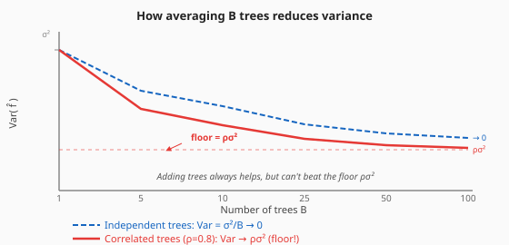
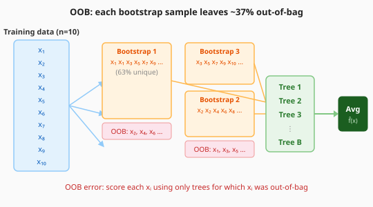
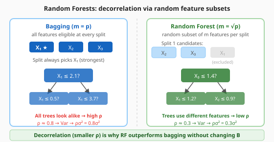
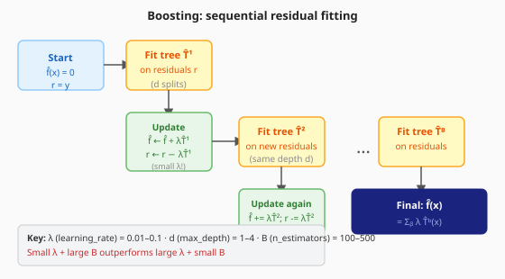
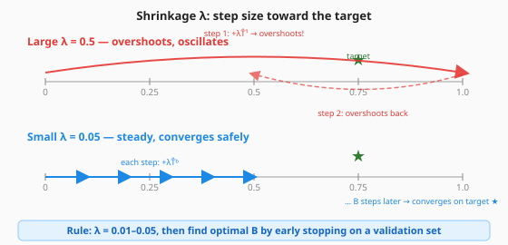
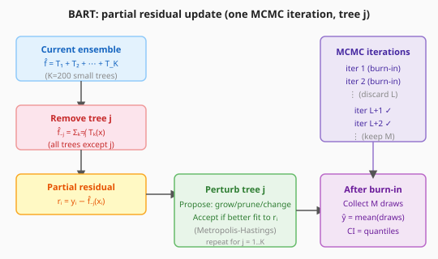

Bagging · Random Forests · Boosting · BART
bootstrap avg · OOB error.
decorrelation · importance.
residuals · shrinkage · 3 knobs.
Bayesian sum of trees.
when to use which.
Random forests and gradient boosting are the two algorithms that win Kaggle and ship in production. Master these and you have an industrial-grade tabular toolkit.
bootstrap aggregating · variance reduction
B = 100–500 is usually enough. Error stabilises quickly; more trees never hurt (just costs time).

Even if ρ = 0.8, averaging 300 trees reduces variance by a factor of ~5. Random forests will reduce ρ further.

But bagging doesn't decorrelate the trees — if one feature dominates, every tree uses it. Random forests fix this.
decorrelation via random feature subsets

Bagging with m=p is just bagging. RF with m < p decorrelates the trees and shrinks the variance floor.
m = ⌊√p⌋
sklearn default: max_features='sqrt'
m = ⌊p/3⌋
sklearn default: max_features=1.0 (= p) — try 'sqrt' or p//3
Vary m from 1 to p, plot test error.
Usually U-shaped:
too small = high bias,
too large = correlated trees.
Two ways to measure importance of feature j:
Use permutation importance for final reporting; gini importance for quick screening.
Random forests are one of the best out-of-the-box methods for high-dimensional gene expression problems.
sequential residual fitting · shrinkage
| Bagging / RF | Boosting | |
|---|---|---|
| Tree training | Independent (parallel) | Sequential |
| What each tree fits | Full y | Current residuals |
| Goal | Reduce variance | Reduce bias (+ variance) |
| Overfitting | Rare (more trees never hurt much) | Possible if B too large or λ too large |

n_estimators
More trees → lower bias. But overfitting possible with large λ.
learning_rate
Smaller λ: slower but usually better. Typical: 0.01–0.1.
max_depth
d=1: stump (no interactions). d=2: one interaction. Often d=1..4 works.
Small λ + large B almost always beats large λ + small B. Shrinkage prevents over-correction.

The practical rule: set λ = 0.01–0.05 and let B be determined by early stopping on a validation set.
Boosting with careful tuning consistently outperforms bagging/RF on structured tabular data.
Bayesian Additive Regression Trees
Y = T₁(X) + T₂(X) + ⋯ + TK(X) + ε

At each iteration, update tree j by fitting it to y minus all other trees' predictions.
BART is unique in providing calibrated uncertainty estimates while using an ensemble of trees.
| Boosting | BART | |
|---|---|---|
| Training | Greedy forward | MCMC (joint posterior) |
| Uncertainty | None | Full posterior distribution |
| Regularisation | Tuning B, λ, d | Priors on tree structure/leaves |
| Speed | Fast (seconds) | Slow (minutes–hours) |
| When to use | Production, prediction | Inference, uncertainty quantification |
when to use which
| Method | Interpretable | Accuracy | Speed | Best for |
|---|---|---|---|---|
| Single tree | ✅ High | Low | Very fast | Explanation, prototype |
| Bagging | ❌ | Medium | Fast | Baseline ensemble |
| Random Forest | ❌ | High | Fast | Robust general tabular |
| Gradient Boosting | ❌ | Very high | Slow | Competition, production |
| HistGBM / XGBoost | ❌ | Very high | Fast | Large data, production |
| BART | ❌ | High | Very slow | Uncertainty quantification |
RandomForestClassifier(n_estimators=300) — no tuning needed.HistGradientBoostingClassifier or XGBoost — tune learning_rate and n_estimators.CalibratedClassifierCV.